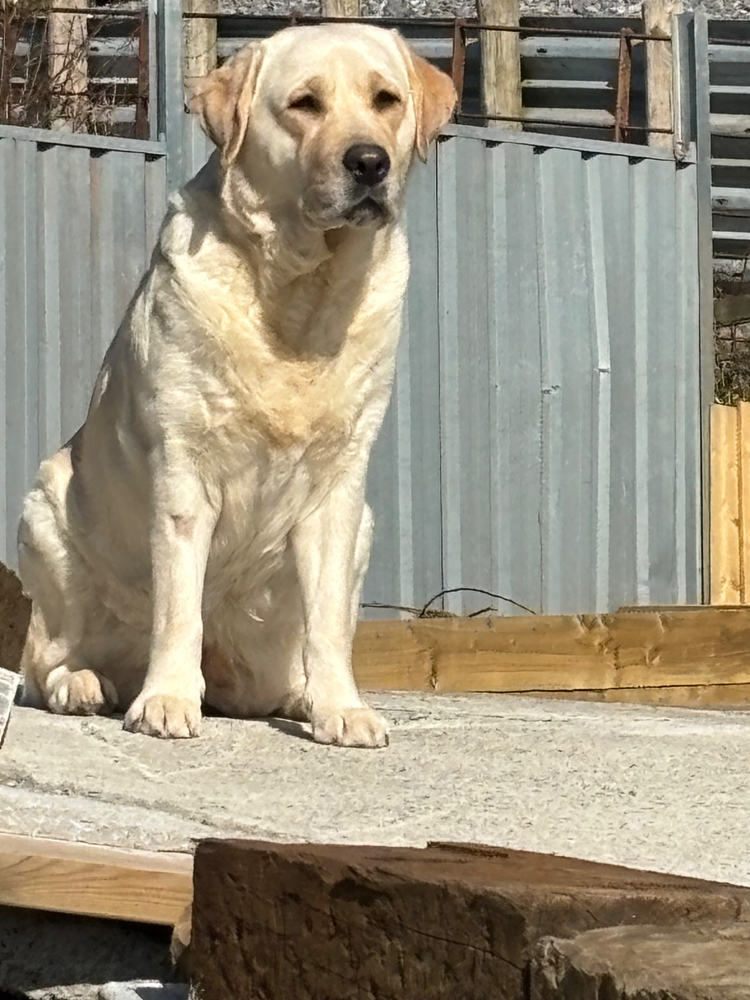
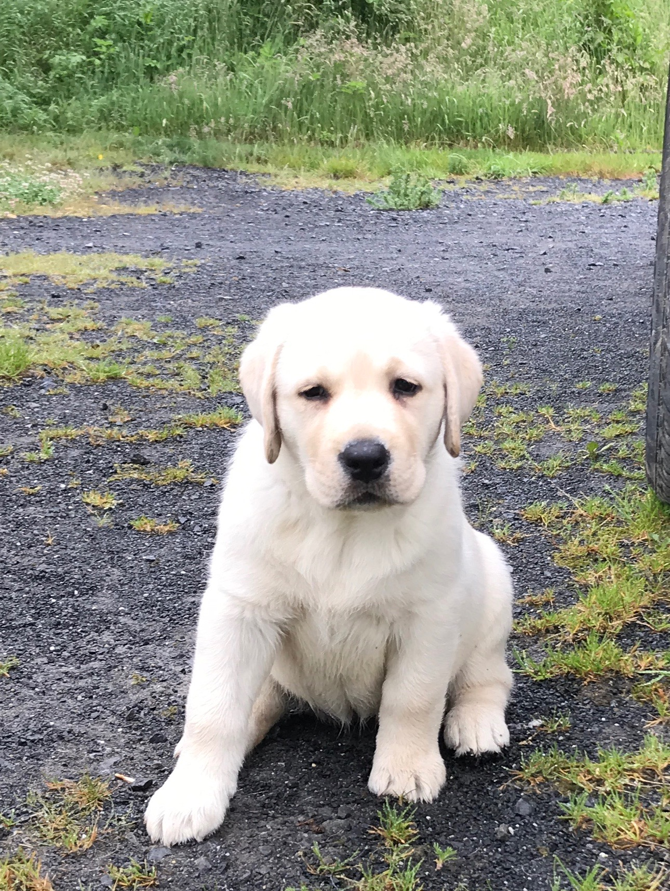

Our dogs · Candy
Candy
Eminala’s Kaos
Our foundation bitch and the dam behind the two young Labradors at the heart of the current Eastdew story.
photography
Three photographs supplied and approved by Chris. These are the only images used here to represent this dog.
Family
Part of the current Eastdew story, bred and raised with the breed’s health, temperament and type at the centre.
Candy · images
The real Candy.
The photographs below are the Eastdew images for this page.

